※這篇文章是用AI（Chat GPT 4o）寫的，再由我部分加筆😆
2024年9月吃的😄 這家位於宜野灣市宇地泊的店，是「龜麵」的獨立店面，所以能享受到與其他龜麵系列店相似的氛圍與味道。外觀以紅瓦屋頂令人印象深刻，是觀光客和當地人似乎都很喜愛的溫暖氛圍。
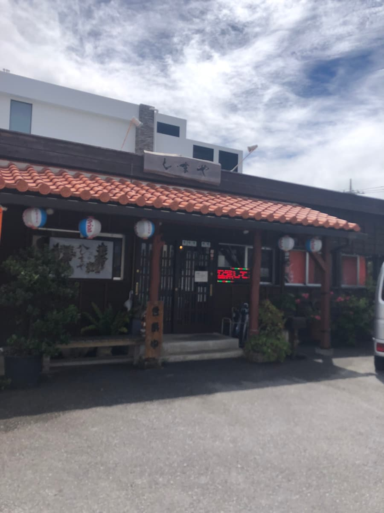
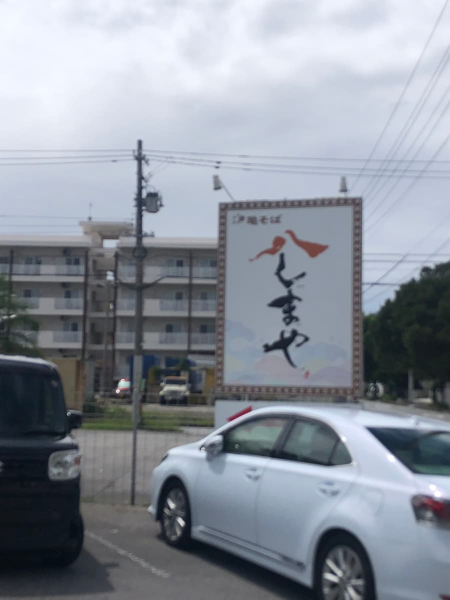
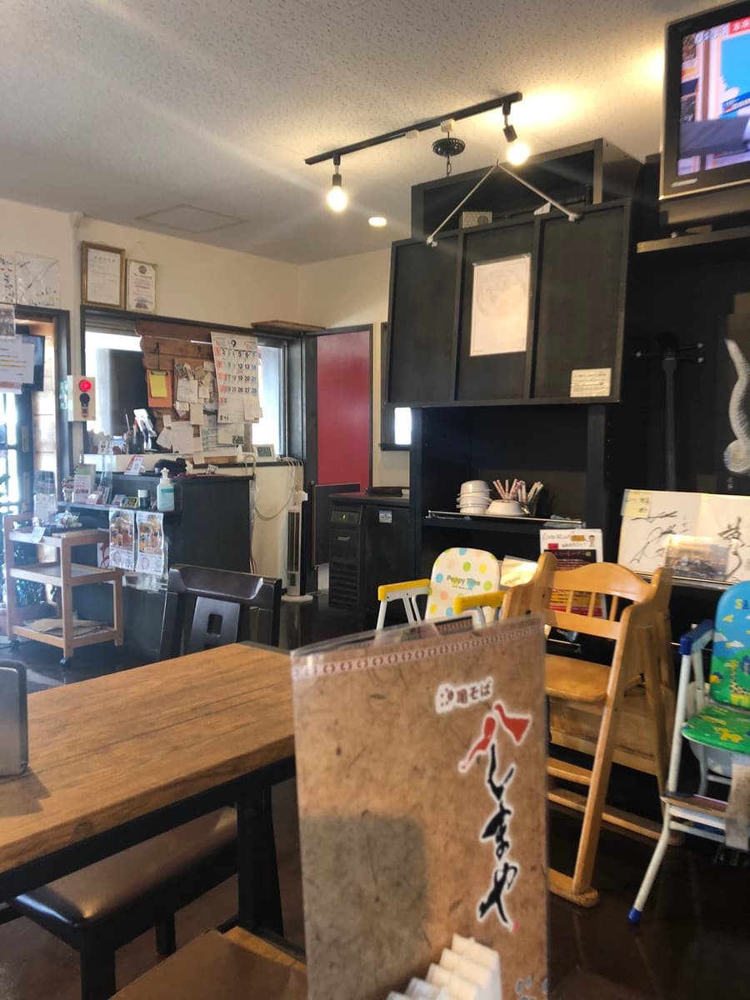
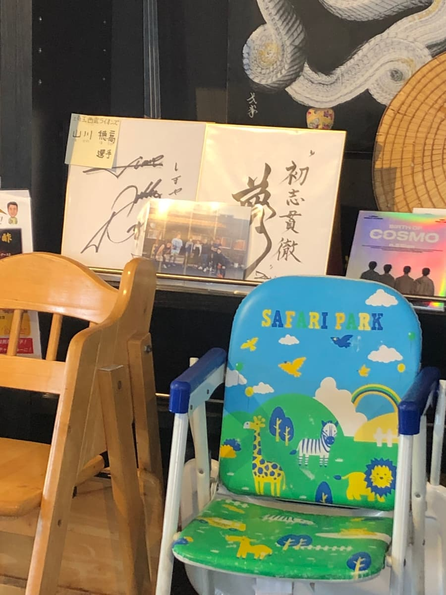
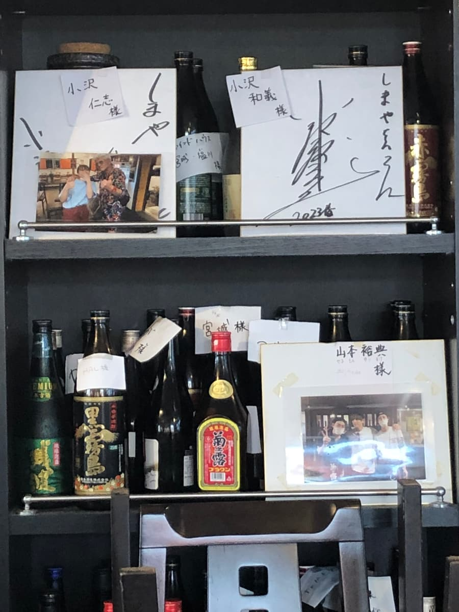
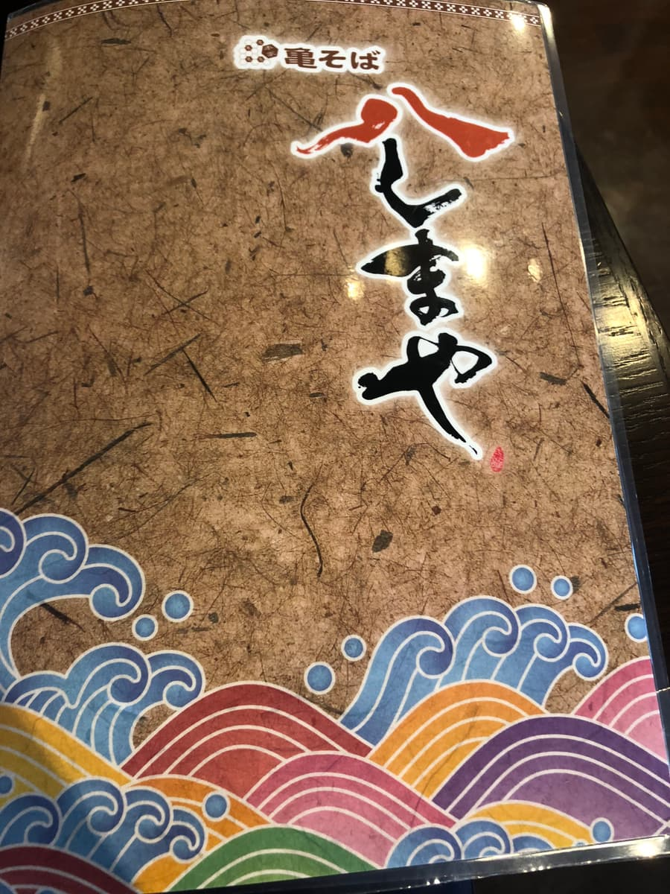
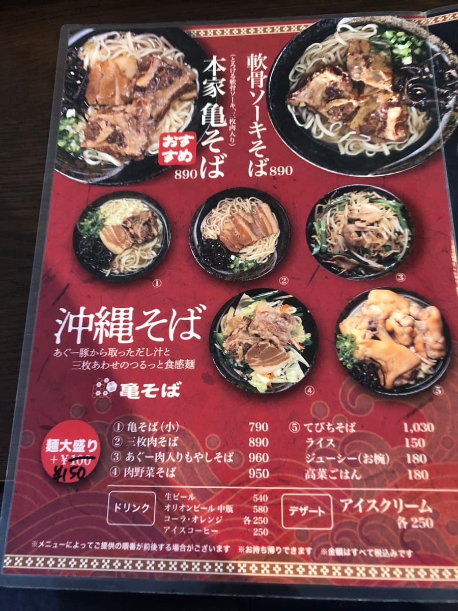
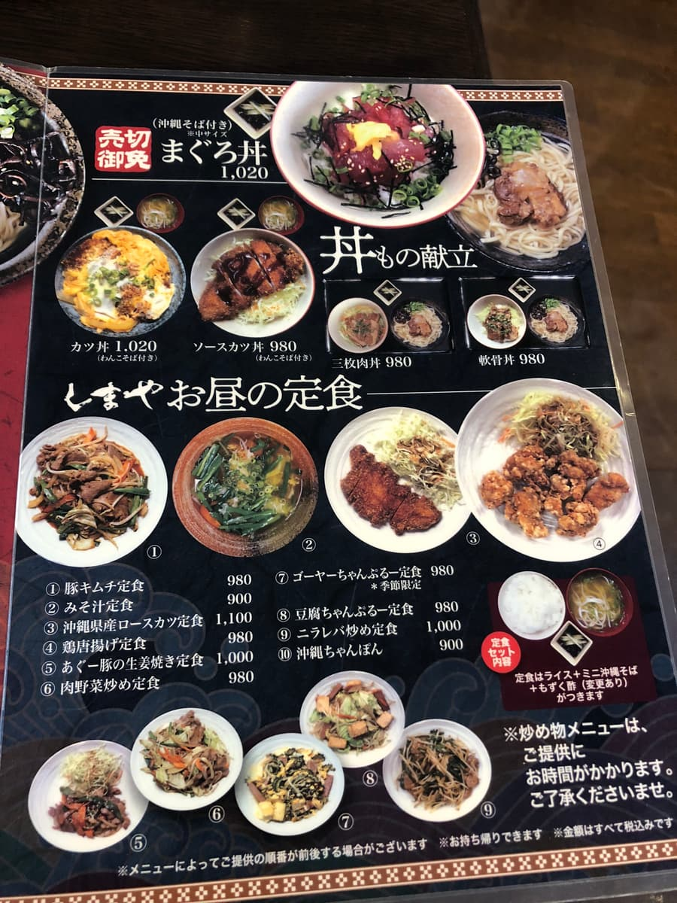
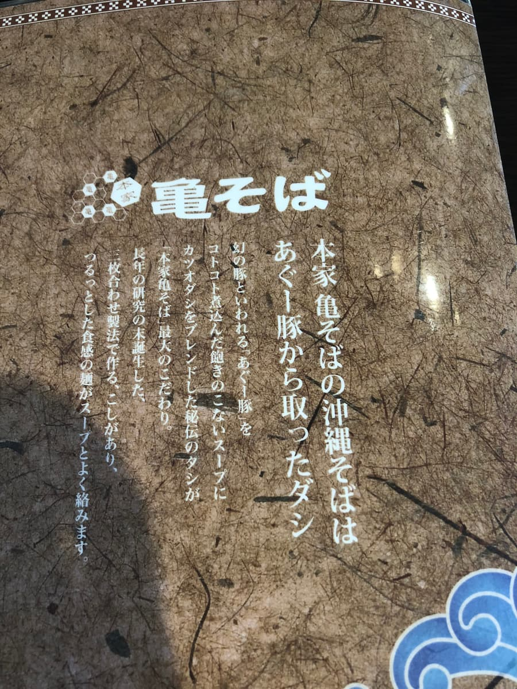
進到店內，這次點了推薦的「本家龜麵」。是菜單上也大大刊登的招牌菜單。
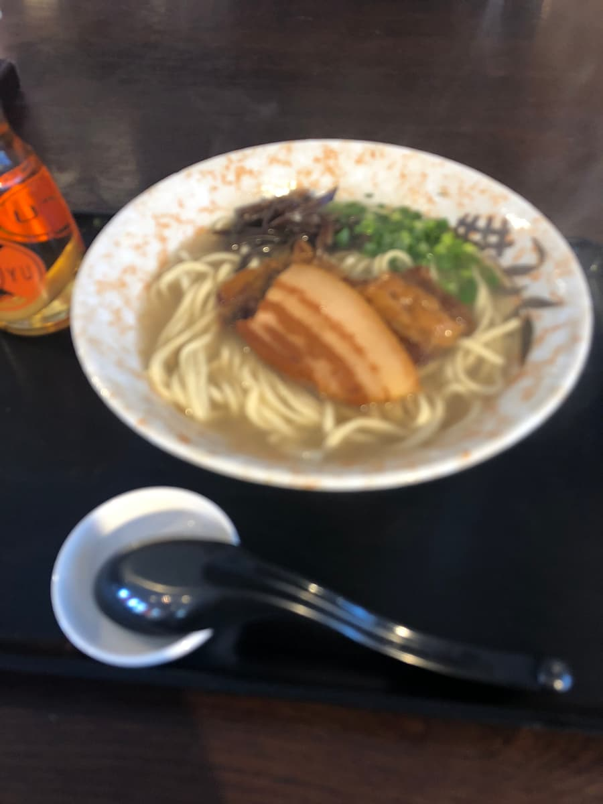
端上來的麵，光看外觀就感覺到簡單卻做得很用心。
首先是湯頭，使用阿古豬熬成的高湯，味道非常溫和。能感受到動物系的濃郁，卻不膩口，是很好入口的成品。是讓人安心的味道，似乎各年齡層都會喜歡。和其他龜麵分店是同樣的味道😄
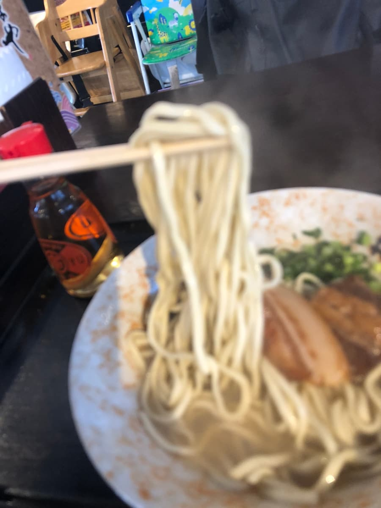
麵是細直麵，煮得偏軟。滑溜的口感很舒服，和湯頭很能融合。個人覺得如果再有一點嚼勁會更開心，不過這也是經典的味道。
而配料以軟骨排骨和三層肉為主。兩者都燉得軟嫩入口即化，魅力十足。調味也恰到好處，甜鹹拿捏得剛剛好。
整體而言，雖然不花俏，但是味道穩定的一碗。特別印象深刻的是湯頭的溫和。我覺得從沖繩麵初學者到當地常客都能廣泛享受。
評分（9分/15分）：普通好吃的感覺，能品嚐到和其他分店相同的龜麵😄
麵：★★★☆☆（3）
湯頭：★★★☆☆（3）
配料：★★★☆☆（3）